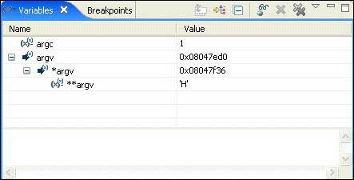

The Variables view shows information about the variables in the currently selected stack frame:

At the bottom of the view, the Detail pane shows the value of the selected variable.
When the execution stops, the changed values are highlighted in yellow (by default). Like the other debug-related views, the Variables view doesn't try to keep up with the execution of a running program; it updates the display only when execution stops.
You can decide whether or not to show the variable type (e.g. int) by clicking the Show Type Names toggle button.

The Show Type Names button is unavailable when columns are visible.
You can also control whether or not the IDE tracks all your program's variables. See the Debugger tab section in the Launch Configurations Reference chapter.
Tracking all the variables can reduce your program's performance.
By default, global variables aren't shown in the Variables view. To add global variables to the view:
-
In the Variables view, click the Add Global Variables button.